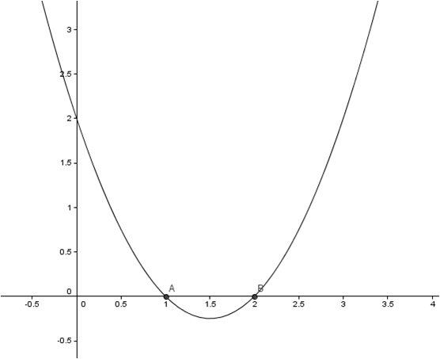
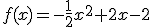
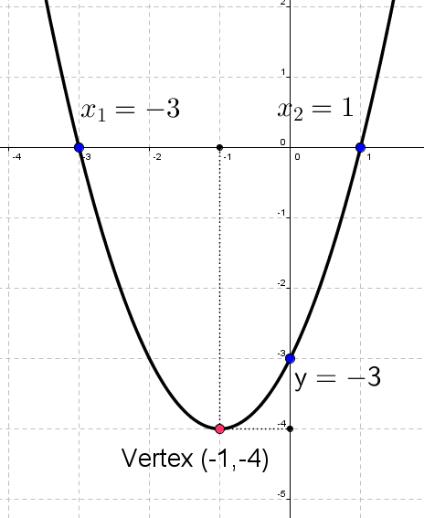
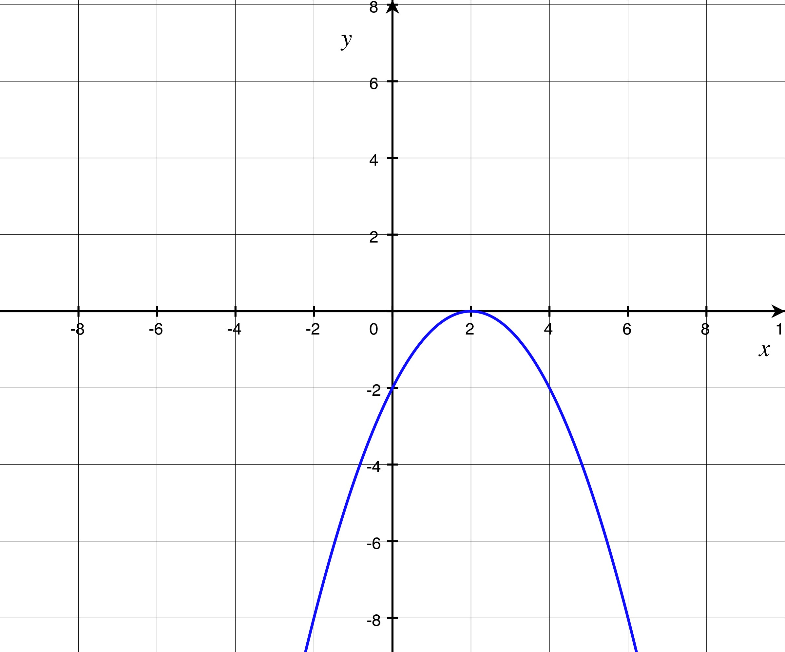

Funciones.Interpolación
Funciones cuadráticas
Una función es cuadrática si tiene esta expresión algebraica: y = f(x) = ax2 + bx + c (a,b,c єR, a≠0), con un polinomio de grado 2.
Su gráfica es una parábola, con un extremo relativo en un punto llamado vértice.
El vértice tiene x = -b/2a como abscisa, y la parábola tiene un eje de simetría en la recta x = -b/2a.
Para dibujar su gráfica, calculamos el vértice, los puntos de corte con los ejes y dos o tres puntos cercanos al vértice.
Ejemplo: f(x) = x2 -3x + 2

Puedes ver las traslaciones de la parábola y que ocurre con el signo de a en estos ejemplos:
Ejercicio. Dibuja la gráfica de estas funciones:
a) f(x) = x2 + 2x -3 = 0
b) 
Soluciones:
a) 
b) 
Obra publicada con Licencia Creative Commons Reconocimiento No comercial Compartir igual 3.0